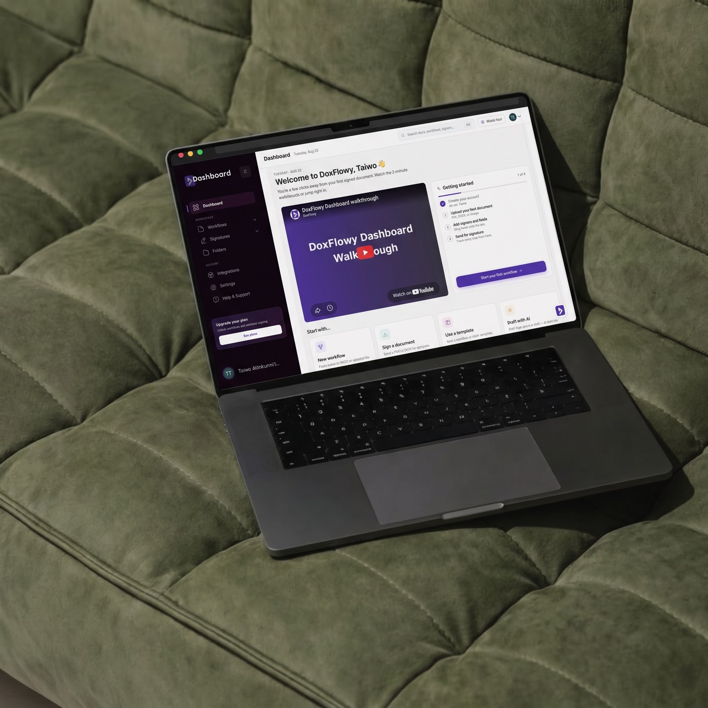
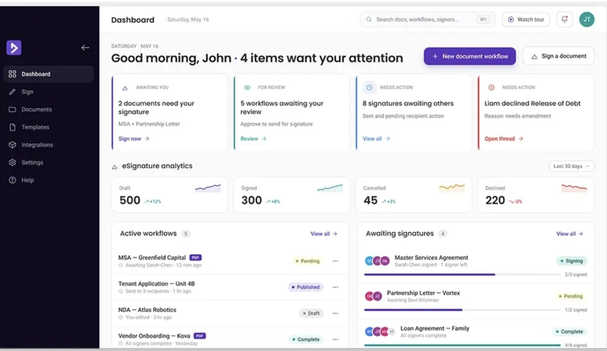
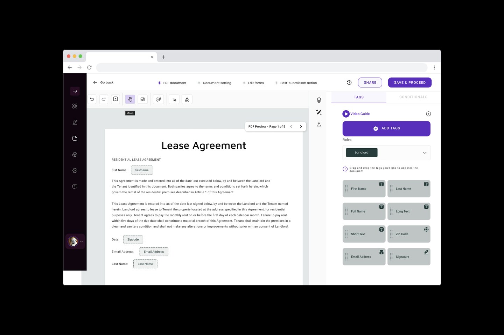
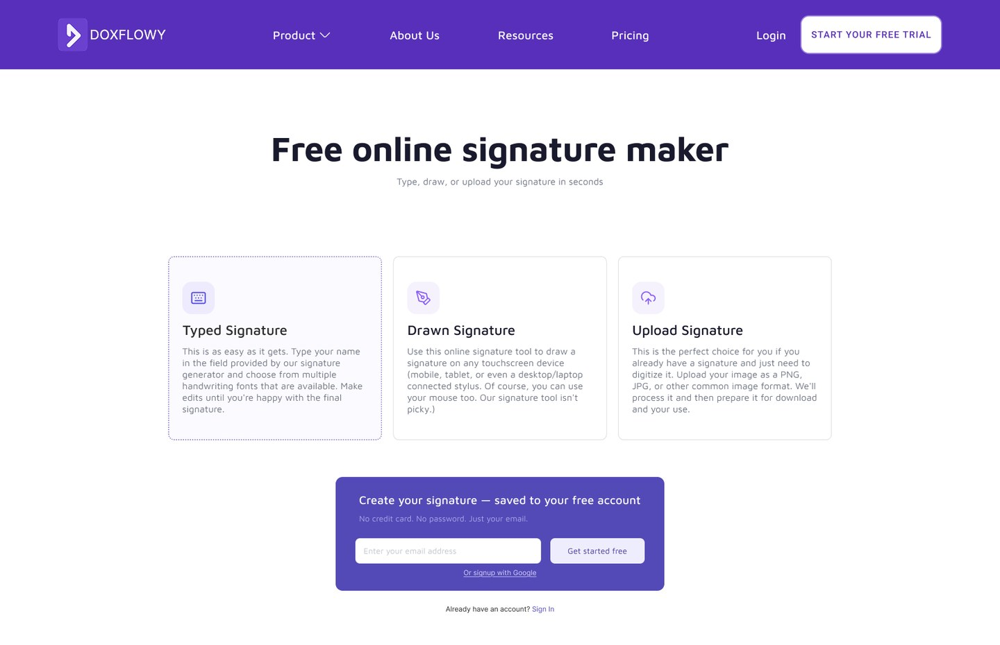
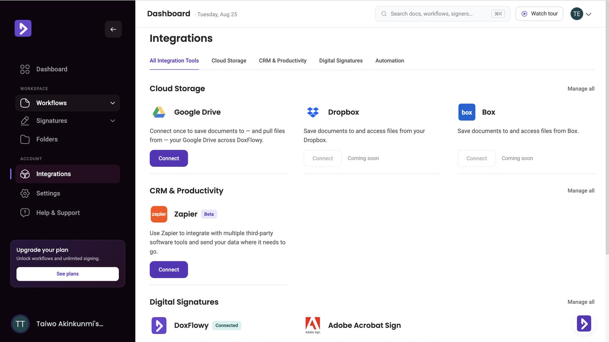
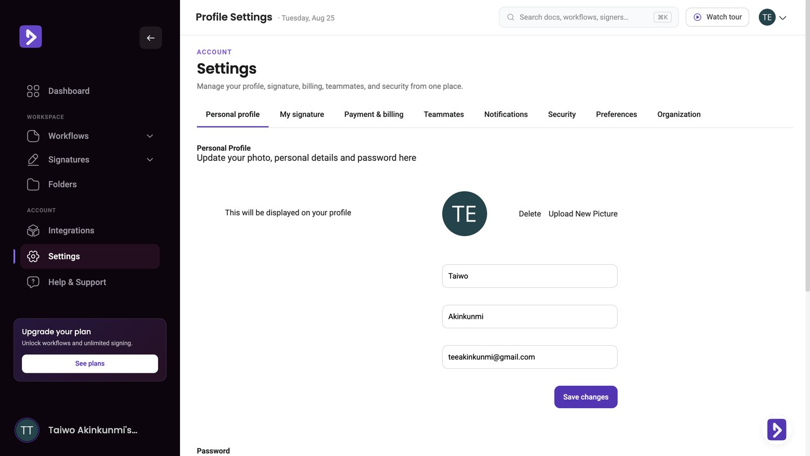
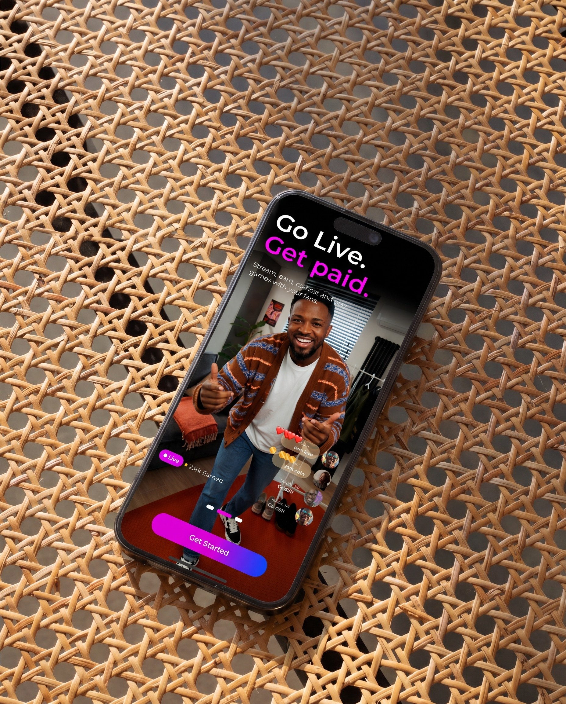

Doxflowy
A document automation and e-signature platform where thousands of visitors downloaded free templates and left without signing up.
I ran monthly UX audits with the founders using Microsoft Clarity, then redesigned the template pages, the document editor and the loading experience around what the data showed.

01.Dashboard
What needs your attention first: documents to sign, workflows to review, signatures pending.

02.Document editor
Drag-and-drop fields tied to signer roles, so one template sends the right fields to the right person.

03.E-signature


04.Integrations and settings
Sign-ups up 42%. Rage taps down 31%.
Session duration rose 27%.
Measured in Microsoft Clarity across the web app and marketing site, March to August 2026.
Renncora
